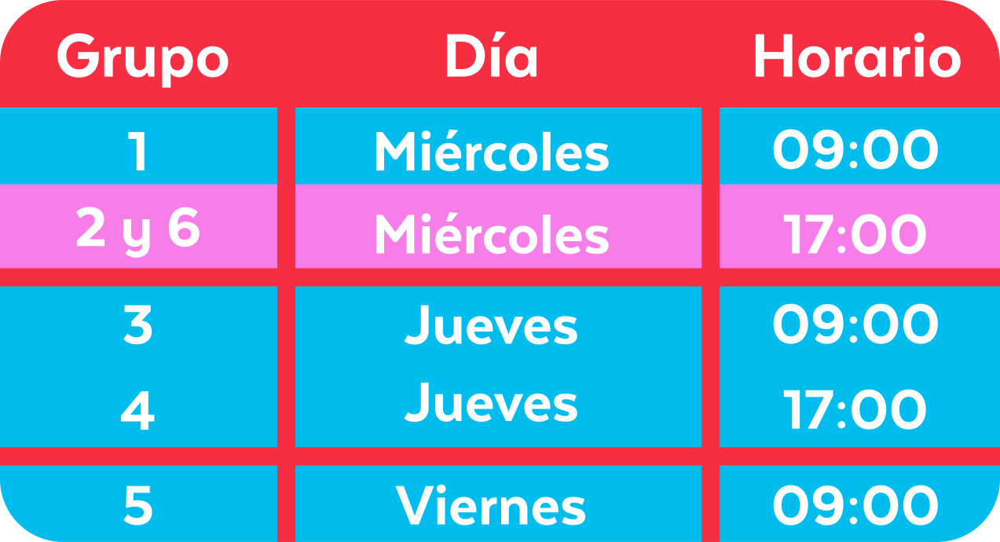

¿Qué es y para qué sirve el sistema de grupos?
El sistema de grupos es una clasificación que permite posicionarte en un determinado grupo en base a la calidad de servicio que prestas. Los grupos van del 1 al 6, siendo el 1 el más alto. De esta manera, mientras mejor servicio prestes, mejor será tu posición. A su vez, te permite elegir con anterioridad los horarios de conexión disponibles para la semana siguiente. Por eso, mientras más alto sea tu grupo, mayores chances tendrás de asegurarte los horarios que desees y que más te convengan. Además, algo muy importante para aumentar tus ingresos, es que podrás obtener un adicional por orden realizada según el grupo al que pertenezcas.
Selección de horarios por grupo
Si tu ciudad cuenta con el sistema de grupos tendrás la posibilidad de seleccionar horarios con anticipación según tu posición actual. Te compartimos este cuadro donde podrás conocer en qué día y horario se realiza la apertura de horarios para la semana siguiente.
Si sos de CABA, GBA, La Plata, Zárate o Campana verás los horarios de conexión una hora después de lo que marca el calendario.
Aquel que esté en grupo 1 podrá seleccionar primero entre todos los horarios de conexión publicados para la semana siguiente. Cuando se habilite a los integrantes del grupo 2, podrán elegir entre los horarios de conexión restantes y así, hasta que se oferten los horarios de conexión de la semana siguiente a todos los grupos.
Importante
Debes tener en cuenta que el grupo se actualiza los lunes de cada semana evaluando la calidad de servicio prestado durante la última semana. Tu performance es comparada con la del resto de los Riders de tu ciudad.
Por lo tanto, tu nivel de servicio actual definirá el grupo al que pertenecerás la semana siguiente.
¿Cómo mejorar mi grupo?
Estos son algunos puntos importantes para que puedas subir de grupo.
Recuerda que el orden de importancia es el siguiente, siendo el primero el más importante.
Prestar servicio durante
las horas pico.
Prestar servicios en los días y horas que hay más pedidos (especialmente viernes, sábados y domingos por la noche) afecta positivamente tu posición en el sistema de grupos.
Prestar servicios en todos los horarios confirmados.
Si no prestas servicios en los horarios que confirmaste tendrás muy pocas posibilidades de subir. En caso de que necesites cancelar un horario deberás hacerlo con 24hs de anticipación para que no afecte tu posición.

Logueo en horario.
Si te conectas en la zona y horario puntual en que comienza tu hora de conexión.
Aceptación de pedidos.
Al final de cada semana se calculará la cantidad de pedidos rechazados y no aceptados sobre el total de pedidos que te fueron asignados. Entre menos pedidos rechazados y no aceptados tengas, más chances tenés de subir.
¡Más horarios de conexión!
Valoramos la cantidad de horarios que se tomen y se cumplan.